1. Begin with the Paper: Start with a square piece of origami paper. If you're using paper that has a colored side, make sure it's facing down.
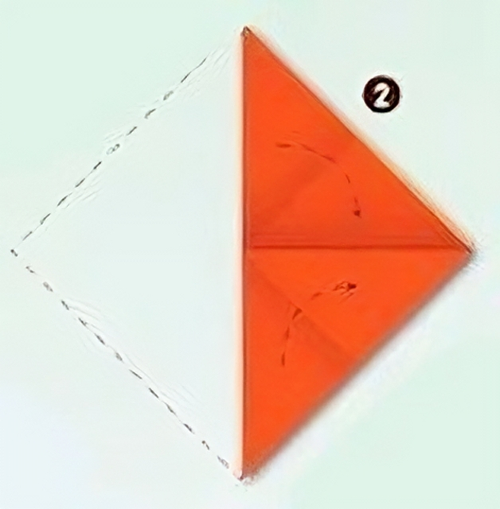2. Fold Diagonally: Fold the paper in half diagonally to form a triangle. Crease well and unfold.
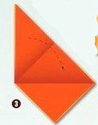3. Fold the Corners: Fold the bottom-left and bottom-right corners of the triangle up to meet the top point. Crease well.
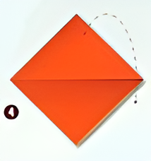4. Fold the Bottom Edge Up: Fold the bottom edge of the paper up to meet the bottom of the triangle created in step 3. Crease well.
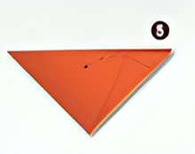5. Fold the Top Down: Fold the top point of the triangle down, tucking it under the folds from step 3 and 4 to secure the shape.
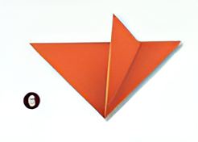6. Shape the Ears: Gently fold the top corners of the paper down to form the fox's ears. Adjust the shape as desired.
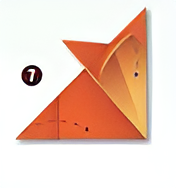7. Final Adjustments: Adjust the folds and edges to refine the fox's shape.
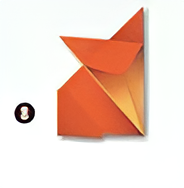8. Completion: Your origami fox is complete!
1. Start with the Paper: Take a square piece of paper and turn it over so the colored side is at the bottom.
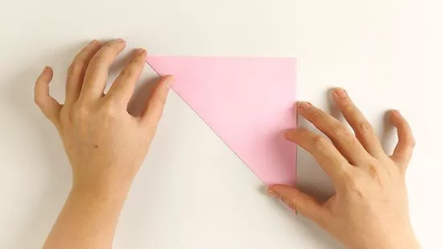2. Fold Diagonally: Fold the piece of paper in half diagonally, forming a triangle.
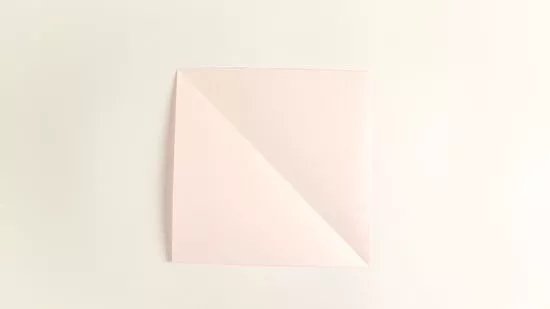3. Fold Again: Unfold your triangle until it resembles a square again.
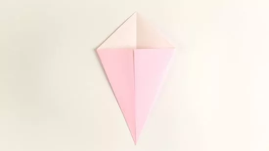4. Fold to the Center: Fold the two edges across from the central crease to meet there. It should form a kite shape.
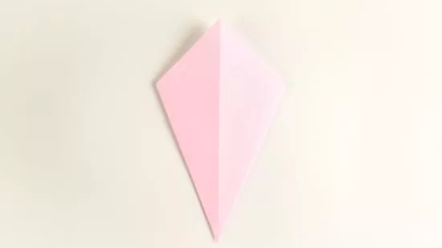5. Rotate the paper: Turn the paper over.
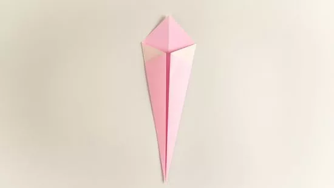6. Fold Again: Fold the top left and top right edges to the centerline.
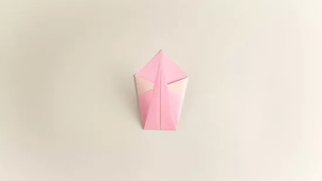7. Fold Bottom Point Up: Fold the bottom point of the paper up to meet the top point. This will create a smaller triangle.
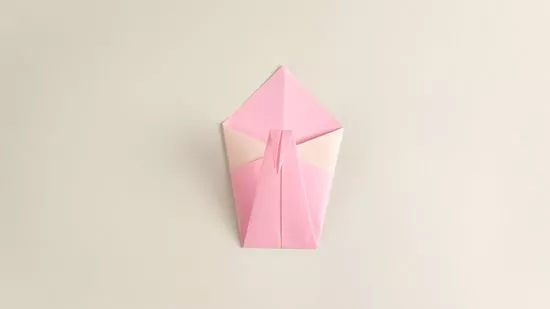8. Fold in Half: Fold the model in half vertically along the centerline, with the flaps on the inside.
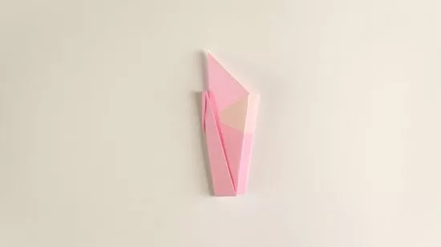9. Create the Neck: Pull out one of the flaps to create the neck and head. You may need to adjust the fold to get the neck to stand upright.
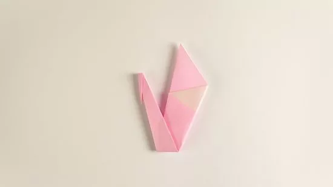10. Shape the Head: Gently curve the tip of the neck downwards to form the head of the swan. Adjust the neck and head to your liking.
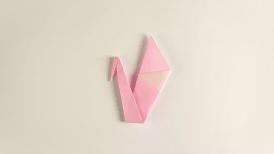11. Final Adjustments: Adjust the folds and edges to refine the swan's shape.
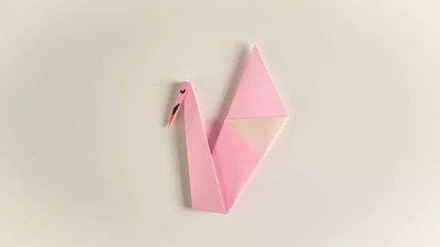12. Completion: Your origami swan is complete!